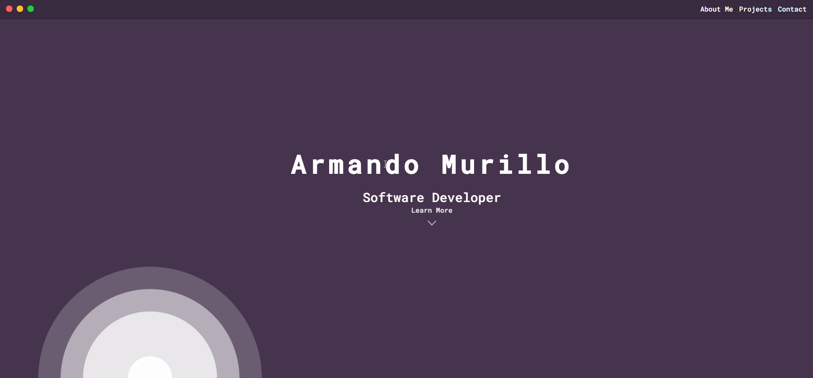
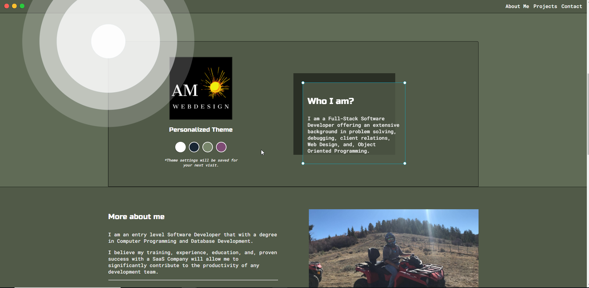
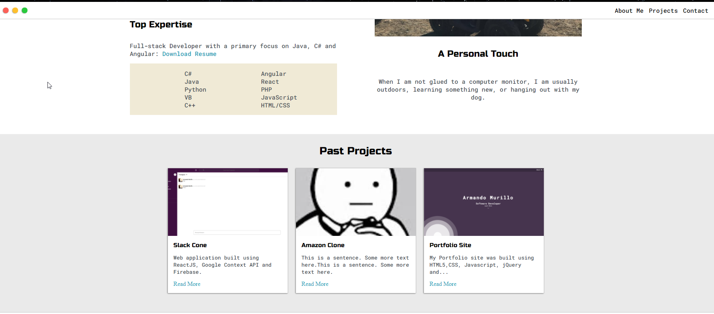
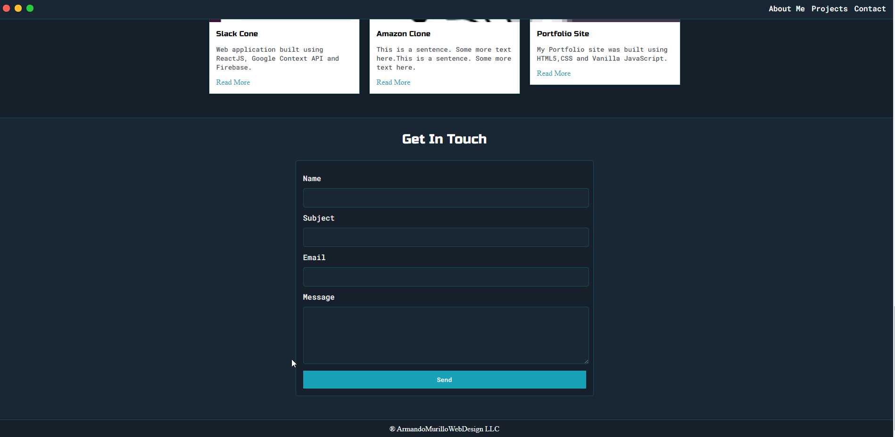

>Porfolio Site
My Porfolio site's main function is provide insight into my abiliities and basic information.
This simple site was built using HTML5 and CSS. CSS grid was used to structure the layout of the site.
JavaScript is being used to change the color theme of the site and save the for next visit.
More Project are being added as I am always expanding my knowledge and skills set.
Technologies:
- Vanilla JavaScript
- CSS Grid
- HTML5
Screen shots


